Tool List¶

Bar Shear¶
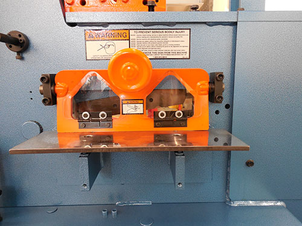Used for shearing flat stock.
Beam Pusher¶
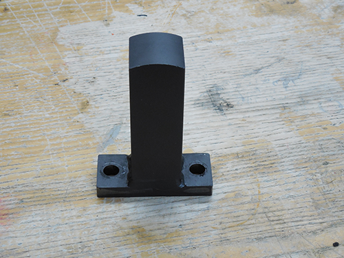Used with the tubing notcher.
Brake¶
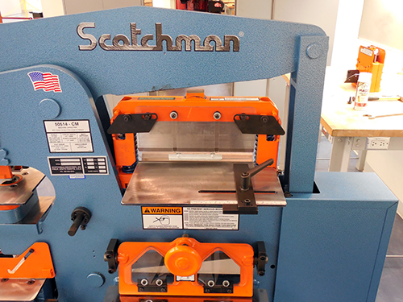Used to bend flat stock up to 1/4” thick.
Control Panel¶

The control panel is where a number of important machine controls are located. This includes the start button, punch and shear selector arm, emergency stop, and the main disconnect switch. You should familiarlize yourself with these controls and their locations.

Die¶
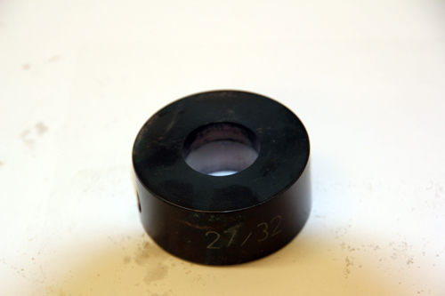Used in the punching process.
Die Holder¶
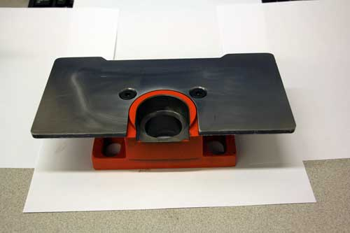Used in the punching process.
Hold-Down Device¶
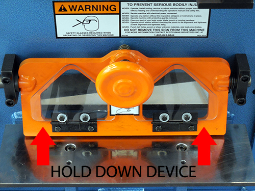Used in the bar shearing process to clamp the workpiece to the table to prevent kick-up.

Punch¶
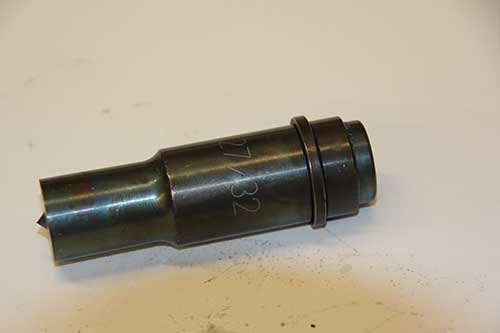Used in the punching process.
Punch Retaining Nut¶
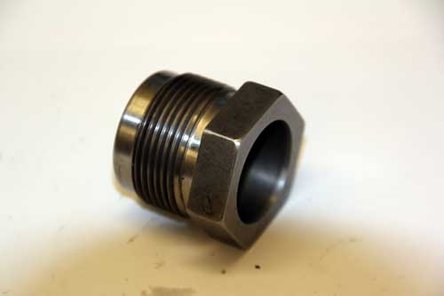Used in the punching process.
Spacer¶
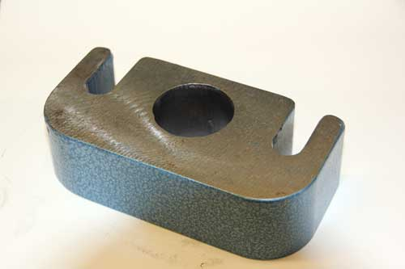Used in the punching process.
Stripper¶
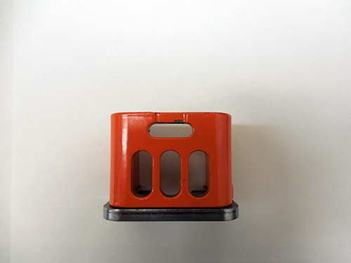Used in the punching process.
Stroke Control¶
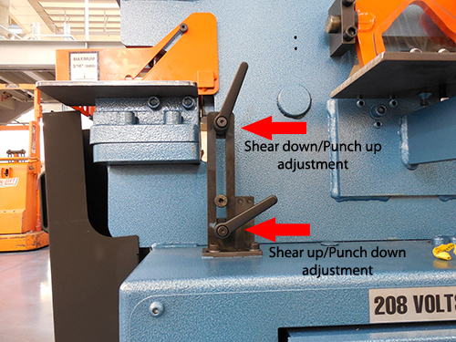Used to set the travel distance of the hydraulic ram. Used in the punching and tube notching processes.
Tube Notcher¶
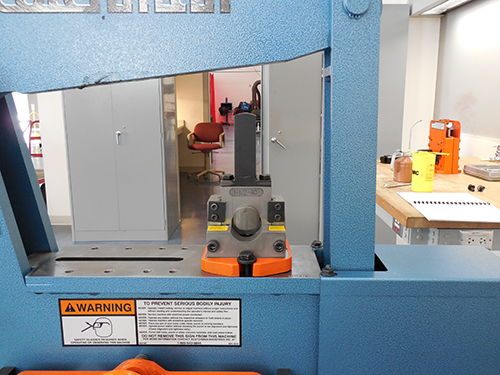Used to notch tube for welding.